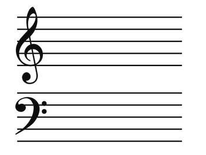
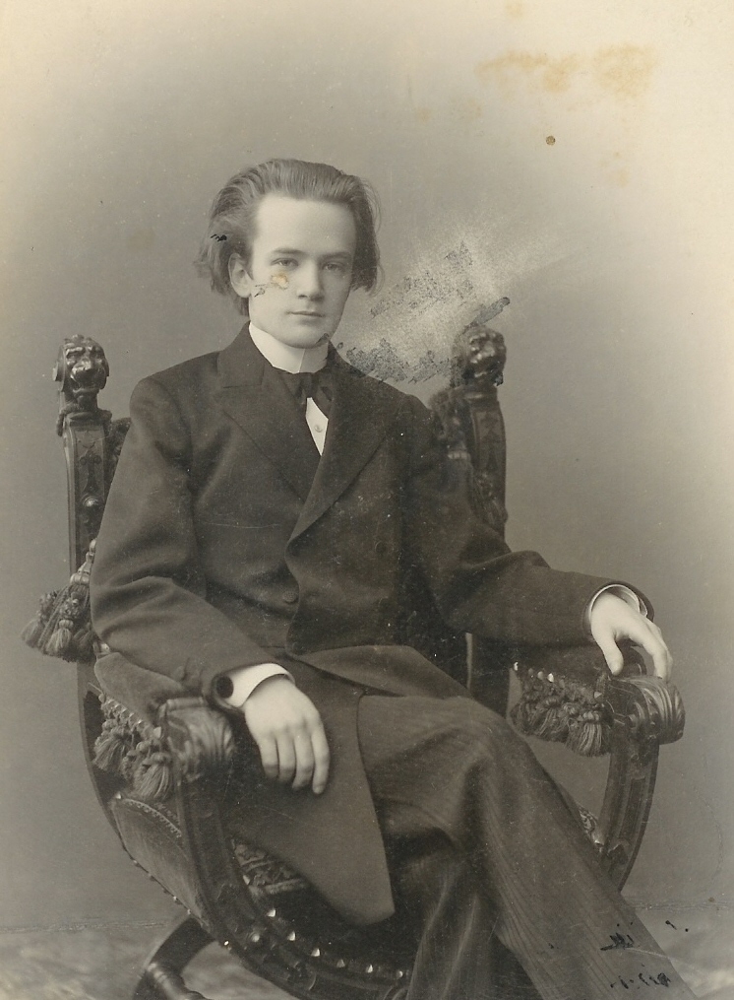
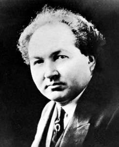

Some Underappreciated Composers

Sergei Bortkiewicz

Born 1877, this late-romantic composer is another descendent of Chopin and Liszt, with many works in the same vein tonally and emotionally as his near-contemporary, Sergei Rachmaninoff. Many lovers of this piano style are unaware of Bortkiewicz and enjoy unconvering his beautiful music!
- Etude in F-sharp minor - Allegro di molto (#9 from Op.15)
- Etude in G - "La Blonde" (#1 from Book 1 of Op.29)
- Etude in F - Allegro commodo e con anima (#1 from Op.15)
Leopold Godowsky

Leopold Godowsky, born in 1870, was nicknamed the "Buddha of the Piano" and was one of the greatest American composers and pianists of all-time. He was legendary specifically for some of his arrangements, such as those after Schubert, Strauss, and particularly Chopin's Etudes.
- Etude in C-sharp minor - "Mazurka" (#34 from his 52 Studies on Chopin's Etudes)
- Song Transcription of "Gute Nacht" (#1 from Schubert's Song Cycle "Winterreise")
- Toccata in G flat (Op.13)